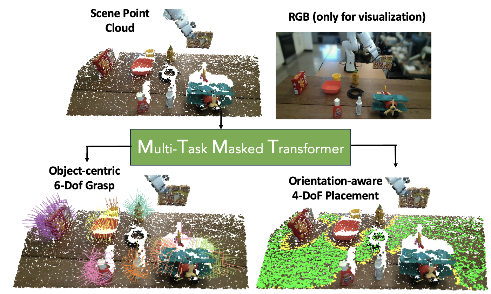
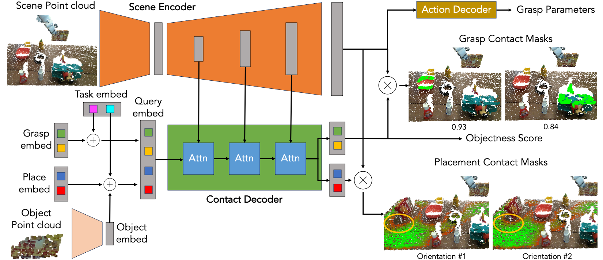
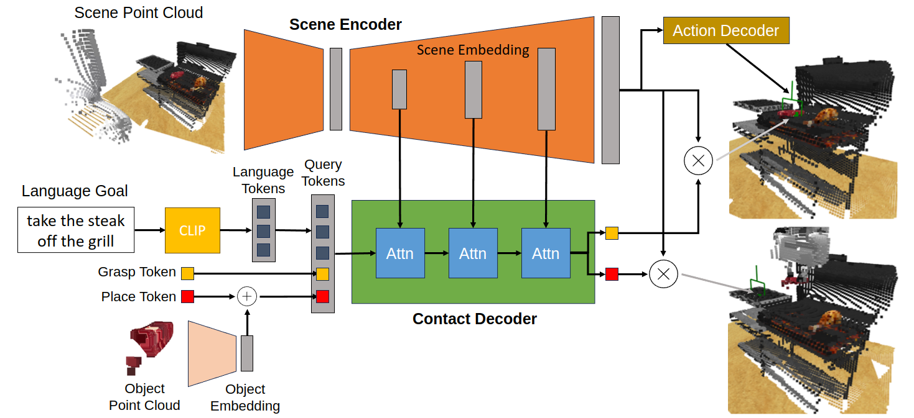

M2T2 is a unified transformer model that predicts target gripper poses for various action primitives. From a raw 3D point cloud, M2T2 predicts collision-free 6-DoF grasps for each object on the table and orientation-aware placements for the object held by the robot.

Real-world Pick-and-place
M2T2 achieves zero-shot Sim2Real transfer for picking and placing out-of-distribution objects, outperforming a baseline system consisting of state-of-the-art task-specific methods by 19% in success rate.
Network Architecture
M2T2 uses cross-attention between learned embeddings and multi-scale point cloud features to produce per-point contact masks, indicating where to make contact for picking and placing actions. Our general pick-and-place network produces G object-specific grasping masks, 1 for each graspable object in the scene, and P orientation-specific placement masks, 1 for each discretized planar rotation. 6-DoF gripper poses are then reconstructed using the contact masks and the point cloud.

M2T2 can also take other conditional inputs (e.g. language goal) to predict task-specific grasps/placements. Below is the architecture for M2T2 trained on RLBench, which is conditioned on language tokens embedded by a pretrained CLIP model.

RLBench
M2T2 can perform various complex tasks with a single model by decomposing the task into pick-and-place sequences. Below are some examples from the evaluation on RLBench. M2T2 achieves 89.3%, 88.0%, 86.7% success rate on open drawer, turn tap and meet off grill respectively, whereas PerAct, a state-of-the-art multi-task model, achieves 80%, 80%, 84%.
Citation
@inproceedings{yuan2023m2t2,
title={M2T2: Multi-Task Masked Transformer for Object-centric Pick and Place},
author={Yuan, Wentao and Murali, Adithyavairavan and Mousavian, Arsalan and Fox, Dieter},
booktitle={7th Annual Conference on Robot Learning},
year={2023}
}